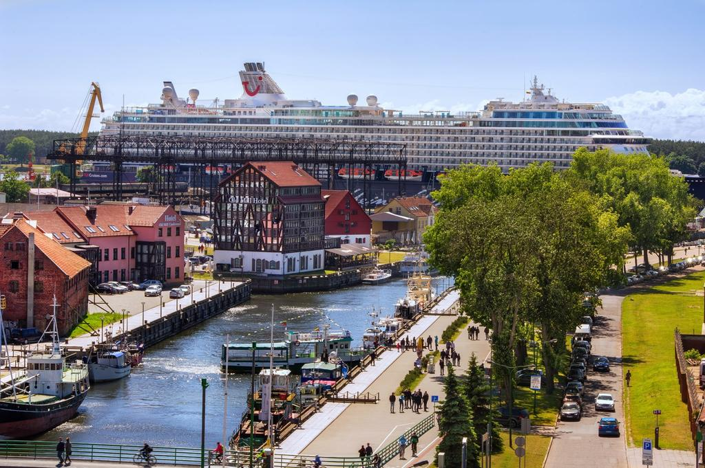
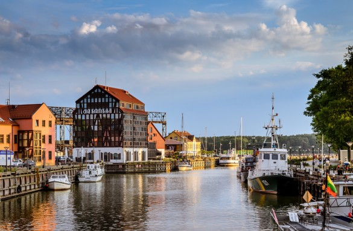
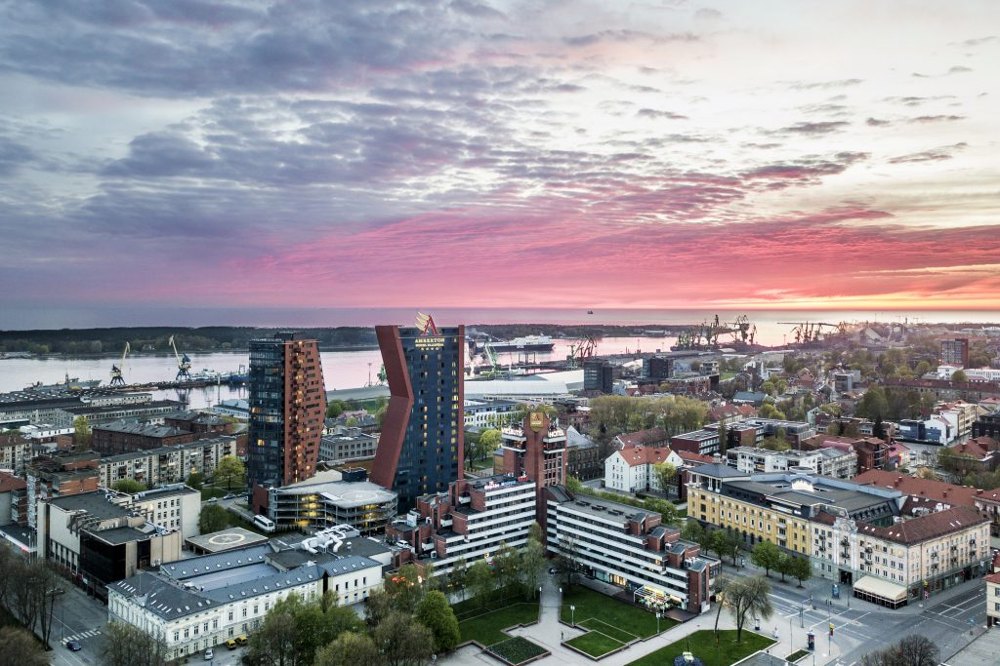

Anksti ryte išvykstame į Klaipėdą, pakeliui kelio informacija. Žaidimai. Atvykus į uostą programa “Klaipėda, jūros vartai į Europą”. Mokomoji pažintinė programa ,,Klaipėdos miesto istorijos knygą atvertus“ vyksta Klaipėdos pilyje arba prie jos. Susipažįstama su unikalia ekspozicija, sužinoma miesto praeitis ir dabartis, pilies perspektyva. (Klaipėdos Pilis renovuojama – informacija iš pilies išorės).
Keltu keliamės į Neringą – Smiltynę.

Jūros pasveikinimas „Jūros dovana draugui”. Ištvermingumo žygis: Smiltynė – Jūrų muziejus – etnografinė pajūrio žvejo sodybą, senųjų žvejybos laivų aikštelė. Akvariumas, muziejaus ekspozicijos po rekonstrukcijos bus atidarytos 2017 m. vasarą. Delfinariumas – Delfinų pasirodymai – edukaciniai pramoginiai renginiai, skirti supažindinti lankytojus su šiais nuostabiais gyvūnais, siekiant, kad žmogus saugotų ir tausotų jų natūralią aplinką – jūrą.
Pietūs (jeigu pageidaujate išrinksime kavinę, užsisakysite iš meniu).
Keliamės atgal į Klaipėdą. Laisvas laikas Klaipėdos senamiestyje. Vykstame iki gamtos stebuklo „Olando kepurės“ Olando kepurė – 24,4 m aukščio skardis Baltijos jūros pakrantėje, Pajūrio regioniniame parke. Prieš 12–15 tūkstančių metų jį suformavo Baltijos ledynas.

Keliaujame į Nakvynės vietą.
Einame į naktinį žygį, vakare išeiname 2 km iki Jūros palydėti saulė. Sutemus grįžtame atgal dar 2 km. į nakvynės vietą.
Pusryčiai. Rytas Klaipėdoje arba Palangoje.

Lankome Palangos gintaro muziejų. Muziejus veikia grafo Felikso Tiškevičiaus rūmuose. Jie pastatyti 1897 m. pagal vokiečių architekto F. Švechteno projektą vietinių gyventojų šventu laikytame Palangos Birutės miške, šalia Baltijos jūros. Rūmus supa Palangos botanikos parkas, kuris buvo pradėtas formuoti statant rūmus, XIX a. pabaigoje. Muziejuje saugoma per 28 000 gintaro eksponatų, iš kurių apie 15 000 turi inkliuzus (turi viduje įstrigusių gyvių). Eksponuojama apie 4 500 gintaro dirbinių, iš kurių daugiausia yra įvairūs dirbiniai arba papuošalai.
Laisvas laikas Palangoje.
Keliaujame į Japoniškus sodus. Unikalus didžiausias Europoje 16 ha Meistro iš Japonijos (Hajime Watanabe) ir gydytojo (Šarūno Kasmausko) kuriamas Japoniškas sodas Kretingos rajone su tūkstančiu bonsai medelių kolekcija, akmenų sodu, sakuromis, tvenkiniais. Šiuo metu padaryta apie trečdalis sodo kūrimo darbų. Galite arbatos namelyje pasimėgauti japoniška žalia arbata Matcha, pamaitinti laimę nešančius japoniškus karpius ir pabendrauti su sodo kūrėjais. Sodas kuriamas pagal senąsias japoniško sodo tradicijas, atkartojant natūralią gamtą, kur nei vienas elementas neturi išsiskirti iš kitų. Svarbiausiai – subalansuota visuma. Tai – susikaupimo ir savęs pažinimo vieta.
Vykstame į Grafų Tiškevičių kultūrinį palikimą. Kretingos dvaras žinomas nuo XVI amžiaus. Grafas Juozapas Tiškevičius 1875 metais nupirko dvarą, rekonstravo rūmus ir pristatė oranžeriją. Joje įkūrė Žiemos sodą. Jame puikavosi vėduoklinės palmės, augo bananmedžiai, kaktusai, apelsinmedžiai, laurai, citrinmedžiai, didžiulė araukarija, o koralais išpuoštomis sienomis raizgėsi vijokliai. Pranciškonų sostinė – Kretinga. Saulės laikrodis – mūsų protėvių išminties lobynas.
Taip pat lankome Baltų mitologijos parką. Parkas puoselėja senąsias baltų (aisčių) kultūros vertybes, ugdo pilietiškumą, prisideda prie valstybės kultūrinės veiklos, skatina baltų grupės tautų ir genčių (regionų) bendravimą. „Pažintinio tako“ uždavinys – atskleisti Baltų (Aisčių) originalų pasaulio ir visatos sąrangos suvokimą per vaizdines (skulptūros) ir garsines (pasakojamąsias ir dainuojamąsias) formas. Remiantis naujausiais baltistikos mokslo mitologijos ir etninės kultūros tyrimais, parodyti, kad senoji Baltų religija nebuvo stabmeldiška, o jos pagrindas – vienas Dievas (monoteizmas), laiko tėkmėje apsuptas dievybių, įprasminančių žmogaus dvasinį ir praktinį gyvenimą, amžinąjį ryšį su Gamta.
Kupini įspūdžių keliaujame namo.
Kaina priklauso nuo: pasirinktų lankomų objektų, programų, žmonių skaičiaus ir išvykimo vietos, viešbučio.
Individualus planas ruošiamas jau susirinkusioms grupėms.
Kelionės programa koreguojama pagal Jūsų pageidavimus.
Goda Jančiūnaitė